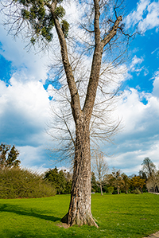

Why Every Yard Has Its Own Tree Care Personality
Atlantic County is not a one-size-fits-all place, and neither are its trees. A property near the bay does not face the same conditions as a wooded lot farther inland. A shaded residential street in Northfield has different tree concerns than an open property in Egg Harbor Township, Hammonton, Galloway, or a shore community closer to salt air and strong coastal winds. That is what makes professional tree service in Atlantic County so important.
Good tree care is not just about trimming branches or removing a tree when it becomes a problem. It is about understanding where the tree is growing, what it is growing near, how the property is used, and what kind of stress the tree faces throughout the year.
In July, this becomes especially noticeable. The trees that looked fine in spring may suddenly show signs of stress. Leaves may wilt, branches may hang lower, canopies may thin out, and weak limbs may become more obvious after weeks of heat, humidity, storms, and heavy summer growth. For homeowners, the question is not always “Does this tree need to come down?” Sometimes the better question is “What signs did I miss?”
Atlantic County Trees Deal With More Than One Environment
One of the most interesting things about Atlantic County is how quickly the landscape can change. Some areas feel coastal. Others feel wooded. Some neighborhoods have mature shade trees lining older streets, while newer developments may have younger trees planted close to driveways, sidewalks, fences, pools, and patios. That variety matters.
Trees near open fields or wide yards may deal with more direct sun and wind exposure. Trees closer to marshy areas may face fluctuating moisture levels. Trees in sandy soil may struggle to stay anchored during periods of heavy rain and strong wind. Trees in dense neighborhoods may compete for space above and below ground.
This is why tree service in Atlantic County should always begin with context. A branch that looks harmless on one property may create a risk on another. A tree that can safely grow in a wide-open area may need more attention when it sits near a roof, power line, driveway, or outdoor living space.
July Reveals What Spring Was Hiding
Spring growth can make trees look full, green, and healthy from a distance. By July, the truth often becomes easier to see.
Summer heat puts pressure on a tree’s entire system. If the roots are stressed, the canopy may thin. If a limb has internal weakness, heavy leaf growth can add weight. If a tree has poor structure, summer thunderstorms can expose the problem quickly.
Homeowners may notice signs such as:

Unusually small leaves
- Branches that did not leaf out fully
- Dead limbs mixed into otherwise green growth
- Cracks in large branches
- Peeling bark or soft spots on the trunk
- Mushrooms or decay near the base
- Branches hanging lower than they did earlier in the season
- A tree that suddenly looks unbalanced
These signs do not always mean the tree needs to be removed. However, they do mean the tree deserves attention. A professional evaluation can help determine whether pruning, crown reduction, selective limb removal, or full tree removal makes the most sense.
Tree Care is Enmeshed with Outdoor Living Spaces
July is also when homeowners use their yards the most. Patios, pools, decks, fire pits, play areas, and outdoor seating spaces all become part of daily life. That changes the way trees should be viewed.
A tree that drops small twigs in an unused corner of the yard might not be a major concern. A tree dropping limbs over a pool, grill area, walkway, or children’s playset is a different story.
Tree service in Atlantic County often involves helping homeowners make their yards safer and more usable without stripping away the shade and beauty that trees provide. The goal is not always to remove every branch that hangs over a space. The goal is to identify which limbs create unnecessary risk, which areas need clearance, and which trees should be shaped in a way that supports long-term health. Proper pruning can improve sunlight, airflow, visibility, and clearance. It can also reduce excess weight on overextended limbs. When done correctly, trimming helps the tree and the property at the same time.
The Problem with Waiting
Many homeowners wait until a branch breaks, a tree leans, or a storm causes damage before calling for help. That reaction is understandable, but it is not always the most cost-effective approach.
Tree problems usually become more expensive after failure occurs. A falling limb may damage a roof, fence, shed, vehicle, pool equipment, or neighboring property. A tree that could have been trimmed months earlier may become a full removal after a storm. A leaning tree that looked “fine for now” may become urgent after heavy rain softens the soil.
Preventative tree care gives homeowners more control. Instead of waiting for weather to make the decision, a professional can inspect the tree, explain the options, and recommend the safest course of action before the situation becomes stressful.
Young Trees Need Attention Too
Mature trees often get the most attention because they are larger and more noticeable, but younger trees also benefit from professional care. In fact, early pruning can prevent long-term structural problems.
Many young trees develop competing leaders, crowded branches, or poor spacing. These issues may not look serious when the tree is small, but they can create weak attachment points as the tree grows. A little corrective trimming early can guide the tree into a stronger shape and reduce future hazards.
For newer homes and recently landscaped properties, this matters. Trees planted too close to driveways, sidewalks, foundations, fences, or utility areas may create problems as they mature. A professional tree service can help homeowners make smart decisions while the tree is still manageable.
Tree Service in Atlantic County Should Fit the Property
The best tree care plan is not based on a generic checklist. It should fit the property.
A wooded property may need selective clearing, deadwood removal, and hazard reduction. A shore-area home may need trees evaluated for wind exposure and salt stress. A suburban yard may need pruning for clearance, shape, and safety. A commercial property may need routine maintenance to protect parking areas, signs, walkways, and customers.
Tree service in Atlantic County should account for all of those details. The right solution depends on the tree species, age, location, condition, and surroundings.
A Smarter Way to Look at Your Trees This July
This July, take a slow walk around your property and look at your trees from a practical point of view. Do they provide shade where you want it? Are there branches too close to the house? Is one side of the canopy heavier than the other? Are dead limbs visible? Has anything changed since last summer?
You do not need to diagnose the problem yourself. You only need to notice when something deserves a closer look.
Ben Bivins Tree Experts provides professional tree care for homeowners and property owners who want safe, healthy, well-maintained trees. Whether you need pruning, trimming, tree removal, storm damage cleanup, or an expert opinion, our team can help you make the right decision for your property.
For dependable tree service in Atlantic County, contact Ben Bivins Tree Experts today.